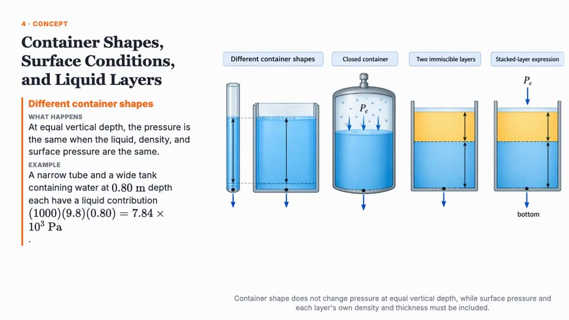
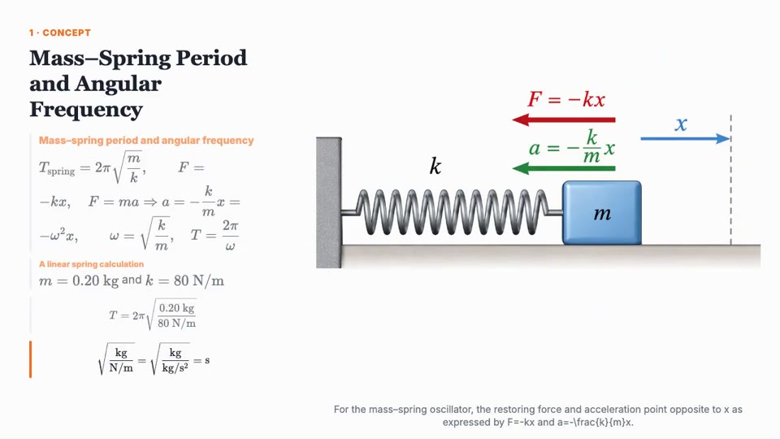
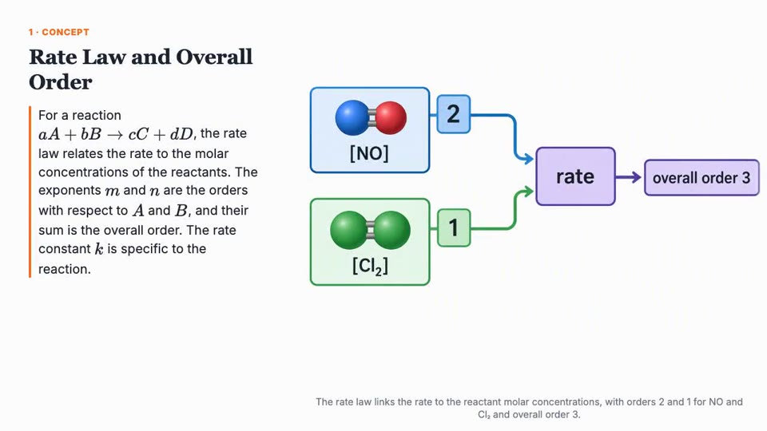
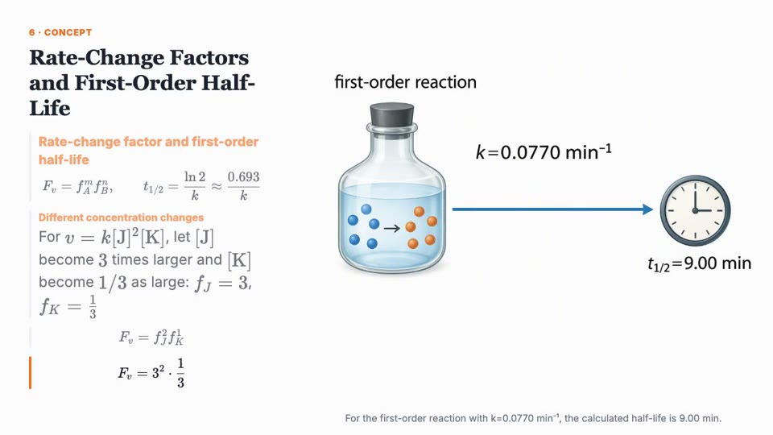
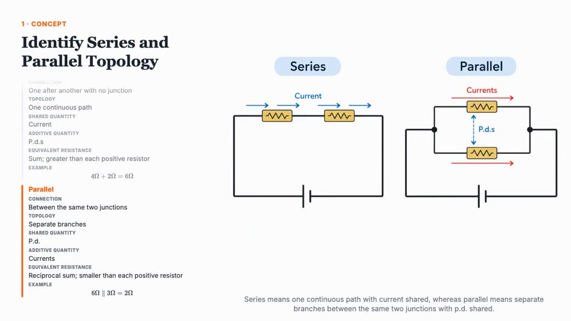
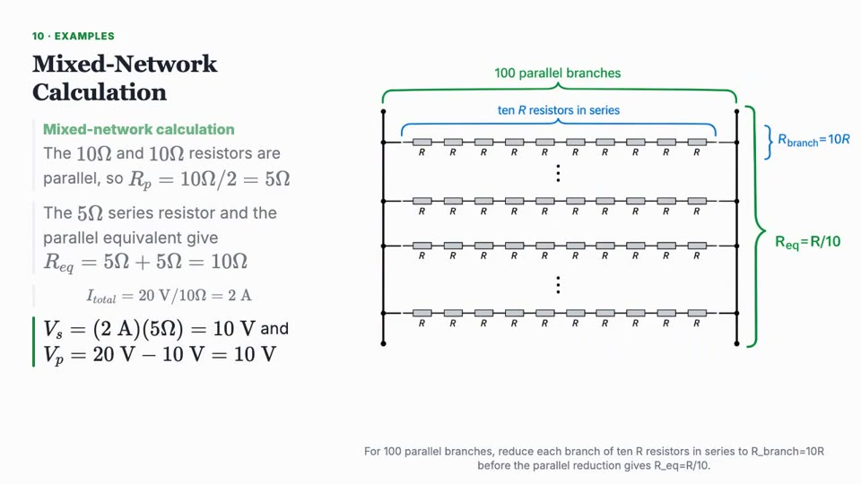

00:08 – 00:16 · GÖRSEL MONTAJ (ana sahne)
Dersler canlanıyor
GörselDers ekranı dikey kadraja kırpılır (sadece diyagram tarafı, ~%60 zoom), her klip ~1.3 sn, beat’e kesme. Alt köşede küçük “AI Tutor · Narration” rozeti.
MetinÜstte konu etiketi değişir: Fizik · Kimya · Elektrik… / sabit: “Yapay zekâ destekli, adım adım.”
Kaynak
PHY-D4 0:08 sıvı basıncı vazosu ·
PHY-D4 2:00 kap şekilleri ·
PHY-D3 0:40 yay-kütle F=−kx ·
PHY-D3 1:35 asılı yaylar ·
CHEM-D4 0:10 moleküller → rate ·
CHEM-D4 0:55 aktivasyon enerjisi grafiği ·
CHEM-D4 4:40 şişe + saat ·
PHY-D6 0:40 seri/paralel devre ·
PHY-D6 8:15 100 kollu ağ





